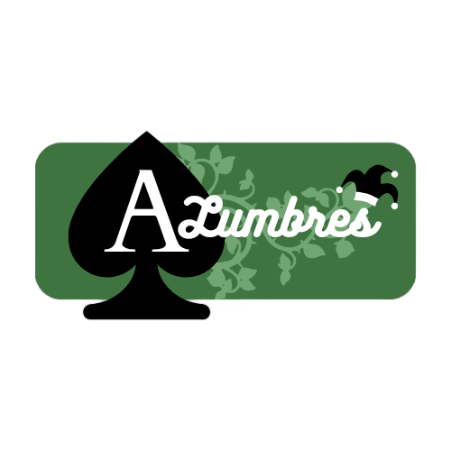
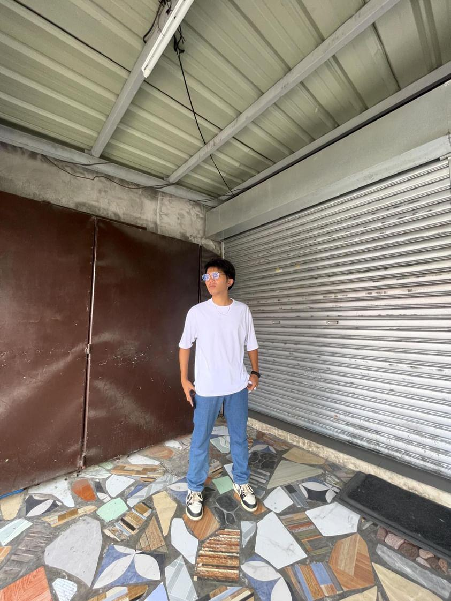

HomePage CoffeeMenu MusicVideo  MusicAudio 2ndSem.Schedule
As I learned a basic HTML code to make a simple web page for my own, I am eager to enhance my skills further, aiming to become a proficient web developer capable of designing, improving, and establishing advanced websites that deliver exceptional experiences to users. My vision encompasses webpages and websites that are not only aesthetically pleasing but also highly functional and user-friendly. I am excited to explore additional languages and techniques that will elevate my creations, making them more innovative and interactive, and ultimately enhancing the overall online experience for everyone who visits my websites.